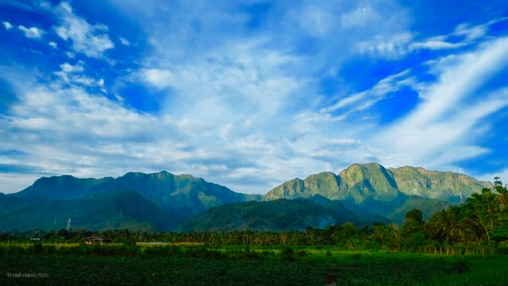

For adventure seekers and nature lovers, Leyte offers a variety of scenic mountain and hiking destinations that showcase the province’s lush landscapes and breathtaking views. From rolling hills to challenging peaks, hiking spots across Leyte provide the perfect mix of physical activity and natural beauty, making them ideal for both beginners and experienced trekkers.

Leyte’s mountainous terrain is home to several hiking trails that vary in difficulty and scenery. One of the most popular is Mount Pangasugan, known as the “last frontier of Eastern Visayas” due to its rich biodiversity and dense forest cover. For those seeking a more relaxed trek, Lake Danao National Park also offers trails with scenic views of the surrounding hills and lake, making it a great option for casual hikers.
Beyond the physical challenge, hiking in Leyte provides an opportunity to connect with nature and experience the region’s diverse ecosystem. Trails often pass through forests, rivers, and elevated viewpoints, rewarding hikers with panoramic views of the island. Whether it’s a sunrise trek or a day-long adventure, these hiking spots offer a refreshing escape and a chance to explore Leyte beyond its coastal attractions.

Mount Pangasugan is considered one of the most biodiverse mountains in the Philippines.
Some trails in Leyte are suitable for beginners, while others offer more challenging climbs.
Lake Danao National Park provides both nature trails and recreational hiking paths.